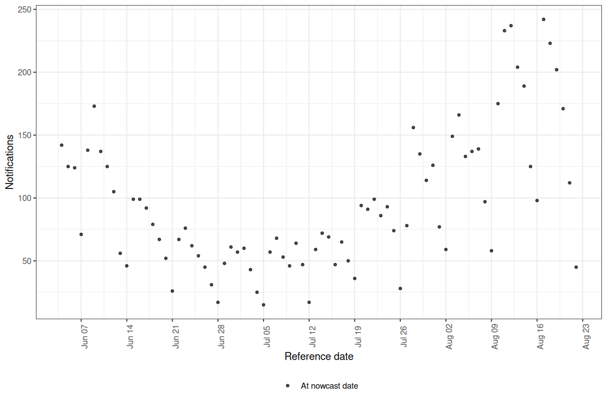
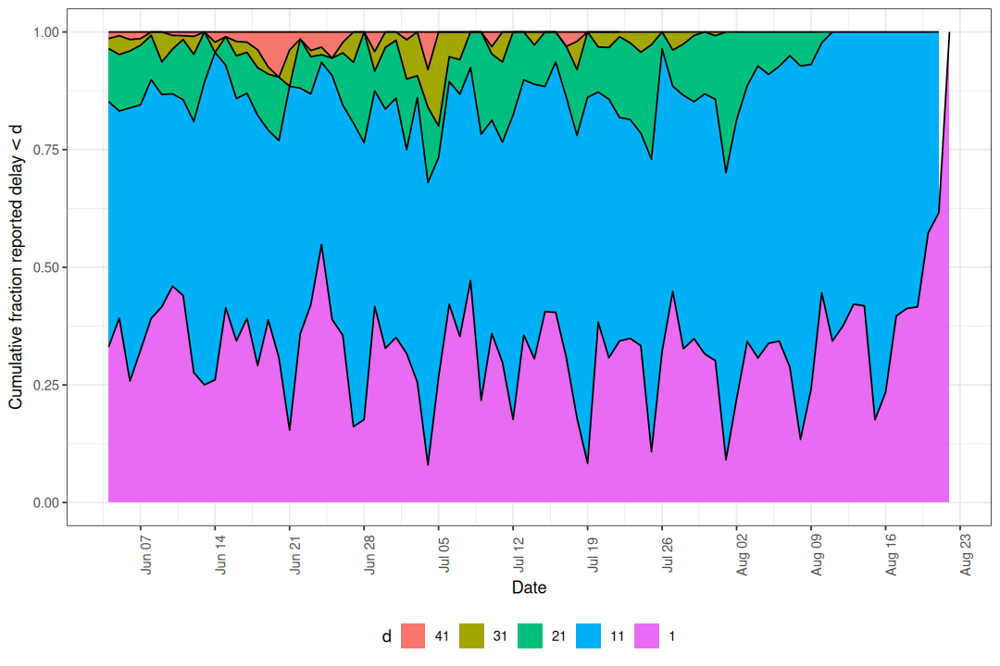
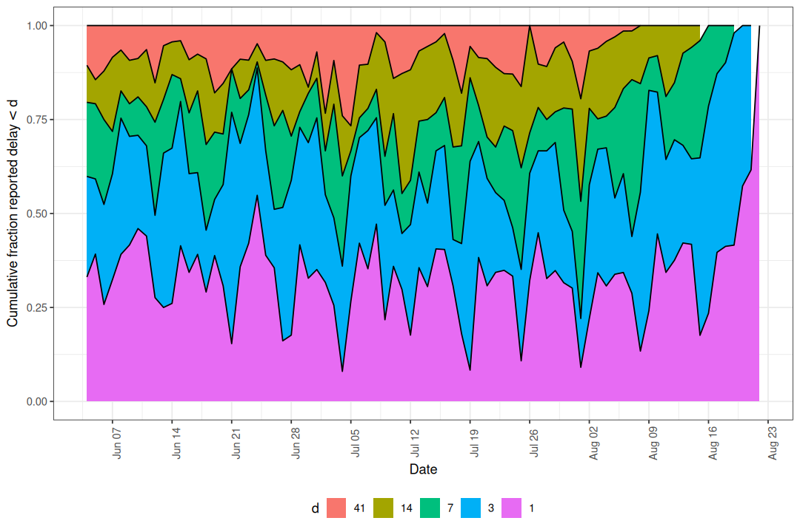
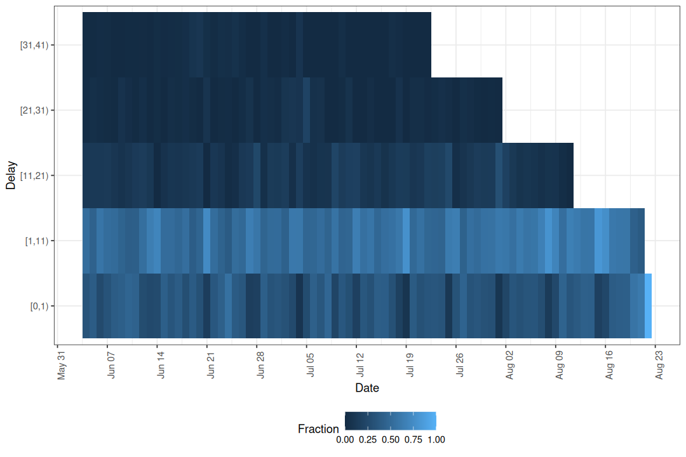
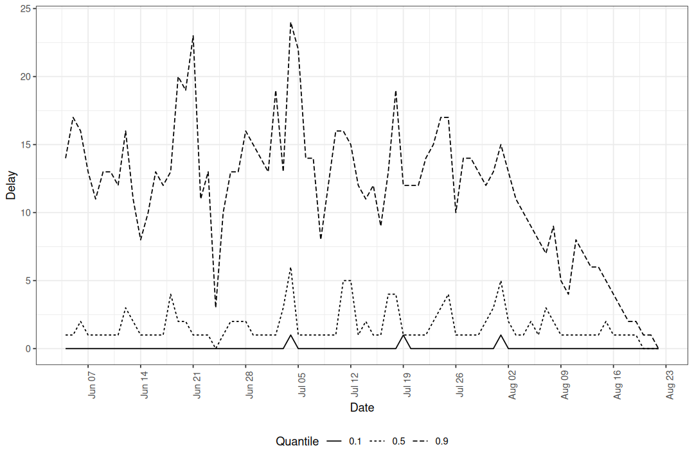
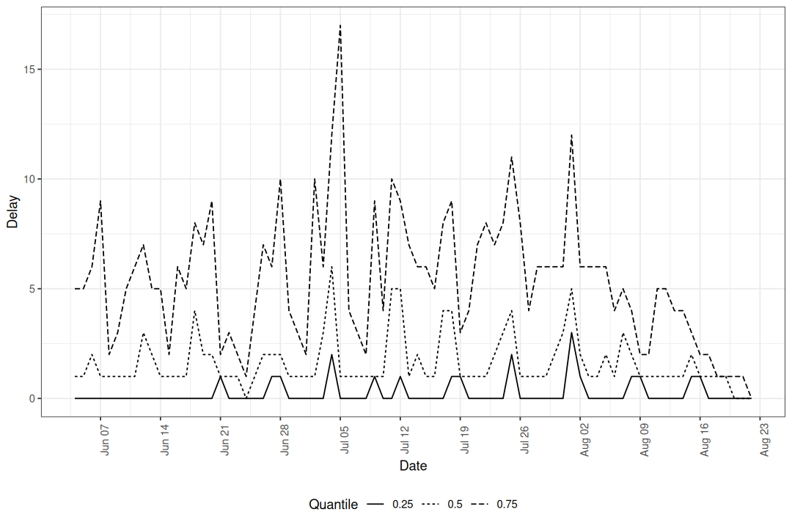
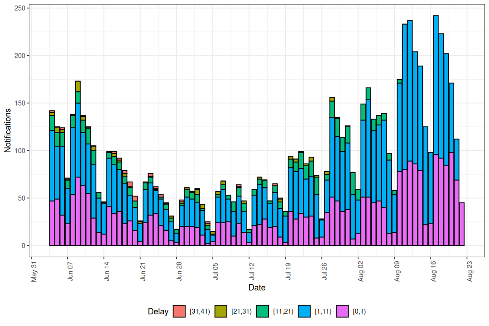
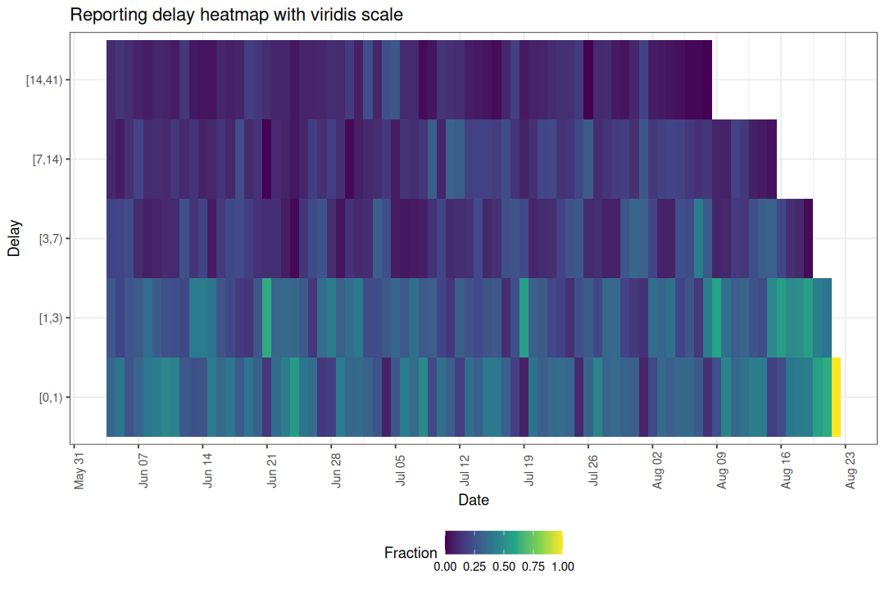

Visualising Preprocessed Data
Epinowcast Team
Source:vignettes/preprocess-visualisation.Rmd
preprocess-visualisation.RmdBefore fitting a nowcasting model it is useful to explore the reporting data to understand the delay structure, identify anomalies, and check that preprocessing has worked as expected.
This vignette walks through the plot types available for enw_preprocess_data objects.
Data
We use the COVID-19 hospitalisation data included in the package, filtered to national-level counts in Germany. We create a retrospective snapshot as if we were standing on 1 October 2021 with 80 days of reference dates and a maximum reporting delay of 40 days.
Code
nat_germany_hosp <- enw_filter_report_dates(
germany_covid19_hosp[location == "DE"][age_group == "00+"],
latest_date = "2021-10-01"
)
retro_nat_germany <- nat_germany_hosp |>
enw_filter_report_dates(remove_days = 40) |>
enw_filter_reference_dates(include_days = 80)Preprocessing
Code
pobs <- enw_preprocess_data(retro_nat_germany, max_delay = 40)
pobs
#> ── Preprocessed nowcast data ───────────────────────────────────────────────────
#> Groups: 1 | Timestep: day | Max delay: 40
#> Observations: 80 timepoints x 80 snapshots
#> Max date: 2021-08-22
#>
#> Datasets (access with `enw_get_data(x, "<name>")`):
#> obs : 2,420 x 9
#> new_confirm : 2,420 x 11
#> latest : 80 x 10
#> missing_reference : 0 x 6
#> reporting_triangle : 80 x 42
#> metareference : 80 x 9
#> metareport : 119 x 12
#> metadelay : 40 x 5The preprocessed object bundles several data tables together.
We can now visualise these data using the plot method, which dispatches to specialised plot functions depending on the type argument.
All delay-based plots below are affected by right truncation: the most recent reference dates have not yet had enough time for all reports to arrive, so their delay distributions will appear to be shorter than the true distribution. Keep this in mind when interpreting the rightmost portion of each plot.
Latest observations
The default plot type ("obs") shows the latest cumulative case counts by reference date.
This is the data the model will attempt to nowcast.
Code
plot(pobs, type = "obs")
Figure 1: Latest reported hospitalisations by date of positive test.
The apparent drop in counts at the right edge of the series is a hallmark of right truncation: reports for recent reference dates have simply not had enough time to arrive. This is precisely the signal that nowcasting aims to correct.
Cumulative reporting delay
The "delay_cumulative" type shows the cumulative fraction of cases reported by each delay group over time.
Reference dates where a large fraction is reported quickly appear as ribbons that reach the top of the plot early.
Dates where reporting is slow show wider gaps between ribbons.
Code
plot(pobs, type = "delay_cumulative")
Figure 2: Cumulative fraction reported by delay group.
When no delay_group_thresh is supplied the thresholds are generated automatically from max_delay.
Custom thresholds can highlight specific delay windows of interest.

Figure 3: Cumulative reporting with custom delay thresholds.
If the ribbons are stable across reference dates the delay distribution is roughly stationary, which may justify a simpler model without time-varying delay components. Drift or shifts in the ribbons indicate the delay structure is changing and should be modelled.
Reporting delay heatmap
The "delay_fraction" type shows the fraction of cases reported in each delay group as a tile plot.
Code
plot(pobs, type = "delay_fraction")
Figure 4: Fraction of cases reported by delay group and reference date.
Here we can see changes in colour across columns that line up with day of the week, which indicates the delay distribution depends on the reference weekday. The cumulative plot shows how fast reports accumulate overall, while the heatmap isolates where within the delay distribution a change is happening.
Reporting delay quantiles
The "delay_quantiles" type plots empirical quantiles of the reporting delay distribution for each reference date.
By default the 10th, 50th, and 90th percentiles are shown.
Code
plot(pobs, type = "delay_quantiles")
Figure 5: Empirical delay quantiles over time.
Lower quantiles (e.g. the 10th percentile) are less affected by right truncation because early reports have had time to arrive. Higher quantiles (e.g. the 90th percentile) are more heavily truncated because they depend on late-arriving reports that may not yet have been observed for recent reference dates. A sudden drop in the higher quantiles at the right edge is therefore expected and does not necessarily indicate a real change in reporting speed.
Quantile lines summarise the delay distribution as a single number per reference date, which makes small temporal trends easier to read than from the heatmap but hides the full shape. Use the quantile plot to check whether the median and tails drift over time; fall back to the heatmap when you need to see which delays are responsible for a change.
Custom quantiles can be specified.

Figure 6: Median and interquartile range of reporting delays.
Notifications by delay group
The "delay_counts" type produces a stacked bar plot showing the number of notifications by reference date, coloured by how long they took to be reported.
This combines the volume of reports with their timeliness in a single view.
Code
plot(pobs, type = "delay_counts")
Figure 7: Notifications by reference date coloured by reporting delay.
Compared to the cumulative and heatmap plots, which show proportions, this plot puts absolute counts on the y-axis. Use it when you care about the size of each delay group in context with the overall reporting volume, for example when deciding whether a noisy-looking right edge is supported by many notifications or by only a handful.
Using the individual plot functions
Each plot type corresponds to an exported function that can be called directly for more control.
| Plot type | Function |
|---|---|
"obs" |
enw_plot_obs() |
"delay_cumulative" |
enw_plot_delay_cumulative() |
"delay_fraction" |
enw_plot_delay_fraction() |
"delay_quantiles" |
enw_plot_delay_quantiles() |
"delay_counts" |
enw_plot_delay_counts() |
These return standard ggplot2 objects so layers, facets, and themes can be added freely.
Grouped data are auto-faceted by .group; pass facet = FALSE to disable and supply your own layout.
Code
enw_plot_delay_fraction(
pobs, delay_group_thresh = c(0, 1, 3, 7, 14, 41)
) +
scale_fill_viridis_c() +
ggtitle("Reporting delay heatmap with viridis scale")
Helper functions
Two helper functions underpin the delay-based plots and can be used independently for custom analyses.
enw_delay_categories() categorises notifications into delay groups and computes empirical reporting proportions.
Code
nc <- enw_delay_categories(
pobs, delay_group_thresh = c(0, 1, 3, 7, 14, 41)
)
head(nc)
#> Key: <.group>
#> .group reference_date delay_group confirm new_confirm max_confirm
#> <num> <IDat> <fctr> <int> <int> <int>
#> 1: 1 2021-06-04 [0,1) 47 47 142
#> 2: 1 2021-06-04 [1,3) 85 38 142
#> 3: 1 2021-06-04 [3,7) 113 28 142
#> 4: 1 2021-06-04 [7,14) 127 14 142
#> 5: 1 2021-06-04 [14,41) 142 15 142
#> 6: 1 2021-06-05 [0,1) 49 49 125
#> prop_reported cum_prop_reported
#> <num> <num>
#> 1: 0.33098592 0.3309859
#> 2: 0.26760563 0.5985915
#> 3: 0.19718310 0.7957746
#> 4: 0.09859155 0.8943662
#> 5: 0.10563380 1.0000000
#> 6: 0.39200000 0.3920000enw_delay_quantiles() computes empirical delay quantiles by reference date.
Code
eq <- enw_delay_quantiles(pobs)
head(eq)
#> Key: <.group>
#> .group reference_date 0.1 0.5 0.9
#> <num> <IDat> <num> <num> <num>
#> 1: 1 2021-06-04 0 1 14
#> 2: 1 2021-06-05 0 1 17
#> 3: 1 2021-06-06 0 2 16
#> 4: 1 2021-06-07 0 1 13
#> 5: 1 2021-06-08 0 1 11
#> 6: 1 2021-06-09 0 1 13